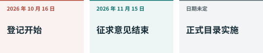

01. 发生了什么，何时生效¶
一份公告，两条时间线¶

商务部和科技部于2026年10月16日发布第48号公告。一部分就《中国禁止出口限制出口技术目录》的修改征求意见；另一部分立即对有关技术实施出口前临时登记。登记开始，不意味着草案中新增的禁止和限制措施已经全部成为正式规则。CN48，第一、三部分
征求意见期为10月16日至11月15日。临时登记持续到修订后的目录正式发布并实施。公告没有为这个结束时间指定固定日期。在本版检查的来源中，我们未发现替代本次草案的正式目录；后续公告可能改变本书结论。CN48
什么情形需要关注¶
登记情形包括向境外转让技术所有权、授权境外使用境内技术，以及境内技术的所有权人或实际控制人变为境外主体。商务部还可以通知其他情形。已经开始但尚未完成的出口也在登记范围内。因此，即使没有实体货物出境，所有权或控制权变化也可能有意义。这是我们对公告条文的理解。CN48，第三部分
登记通过商务部业务系统统一平台的技术贸易管理信息应用办理。信息包括出口经营者、接收方、国家或地区、技术、用途及预计金额。一次向同一接收方出口多项技术可以合并填写，其他情形原则上分开。登记本身不是出口许可证，也不能代替其他要求。CN48 CN-A2
四个词的区别¶
禁止意味着在明确范围内不能出口。限制意味着需要许可路径。自动许可仍然是一种程序。排除则意味着特定情形不属于该条管理范围。我们应先读限定条件，再理解类别名称。CN-A1，注1至注4
假设一家企业计划11月向海外伙伴许可尚未公开的模型技术。我们首先识别技术和条目，然后检查当前登记及现有法律，不能简单等待征求意见结束。同样，也不能仅凭草案中的禁止类别，就说第48号公告已全面禁止这项交易。这只是说明两条时间线的例子。CN48